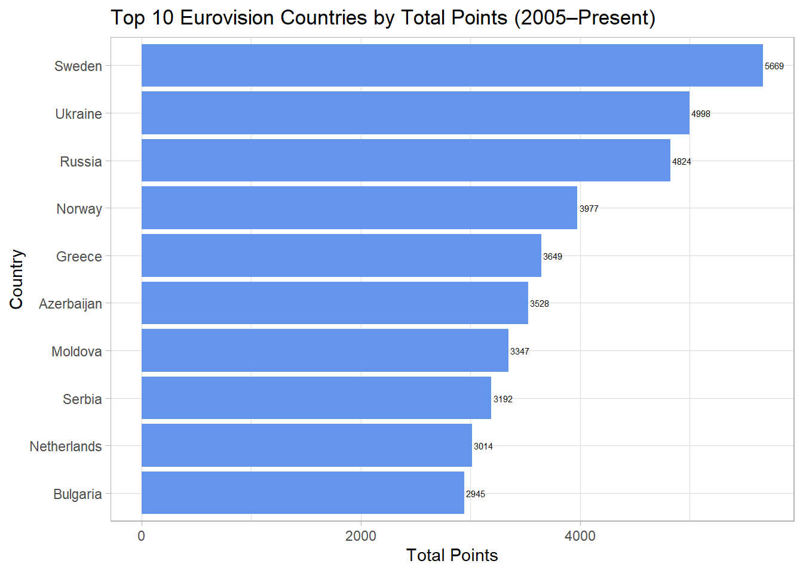

The Eurovision dataset contains a filed called eurovision.csv, and is a collection of data from Eurovision contests since its inception in 1956, with the exception of the 2020 Covid Year. The dataset represents information for all contestants for each year and by round, but it is important to note that changes in the scoring system have occurred throughout different points in time.For example, semi-final rounds were not introduced until 2005. Variables include the event, the host city, the artist country of origin, their song, the points they accumulated, and their rank, among others. I listened to a lot of Eurovision classics without having known before, so it was a pleasant surprise to do an analysis of the top Eurovision countries. Sources of the TidyTuesday dataset will be provided at the bottom of the page.
Code and Graph
# Top 10 countries by cumulative total points since 2005top_countries <- euro |>filter(year >=2005) |>group_by(artist_country) |>summarize(sum_total_points =sum(total_points, na.rm =TRUE), .groups ="drop") |>arrange(desc(sum_total_points)) |>slice_head(n =10) # Cuts the list into just the top 10 countries.# Plotggplot(top_countries, aes(x =reorder(artist_country, sum_total_points),y = sum_total_points)) +geom_col(fill ="cornflowerblue") +geom_text(aes(label = sum_total_points),hjust =-.1,size =2) +coord_flip() +labs(title ="Top 10 Eurovision Countries by Total Points (2005–Present)",x ="Country",y ="Total Points") +theme_light()

Analysis
The horizontal bar chart shows the total Eurovision points earned by countries since 2005 (the introduction of the semi-final system, to make results more comparable to the modern contest). Sweden dominates the charts with 5669 points, followed by Ukraine with 4998 and Russia with 3977. Norway, Greece, Azerbaijan, and Moldova show solid performances in their Eurovision entries. In particular, Azerbaijan only entered the competition in 2008, so 3 years late, but is 6th in total accumulated points, with 3528– an extraordinary result.The following countries are followed by Serbia, then the Netherlands, and lastly Bulgaria, with 2945 points. Eastern European countries dominate the charts, which is surprising, given that the Eurovision “Big-Five,” all Western European countries (U.K., Spain, Germany, France, Italy) are now automatically qualified to the finals despite not scoring the highest. Perhaps, it’s time for a new “Big Five?” Or, do the countries not try as hard to score points, knowing that they are guaranteed finalists due to their financial backing of the competition? It is important to acknowledge that there have been some disbanded countries (countries that no longer exist, such as Serbia and Montenegro), or inactive countries, which affect the total accumulated score of the country (especially in a split like Serbia and Montenegro). I decided that it was better to still continue with total accumulated points compared to average points, because Serbia and Montenegro for example participated in a single contest, placed 2nd, and while is obviously an outlier, “rules” the dataset as the best country by average points.
Link and Credits
The data is provided by Eurovision, and Tanya Shapiro and Bob Rudis shared methods to clean and scrape the data. The link to the dataset can be accessed here: TidyTuesday Eurovision Dataset. The original dataset can be scraped from the Eurovision Site, and can be found by clicking on the “history” tab of the website and then looking at the data of each country.